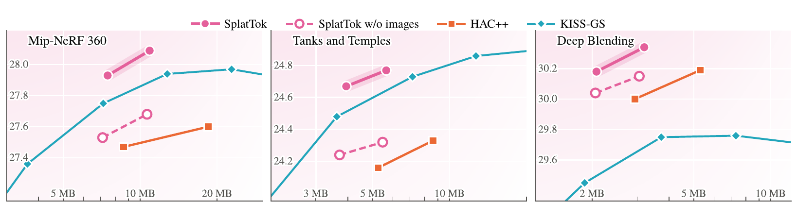
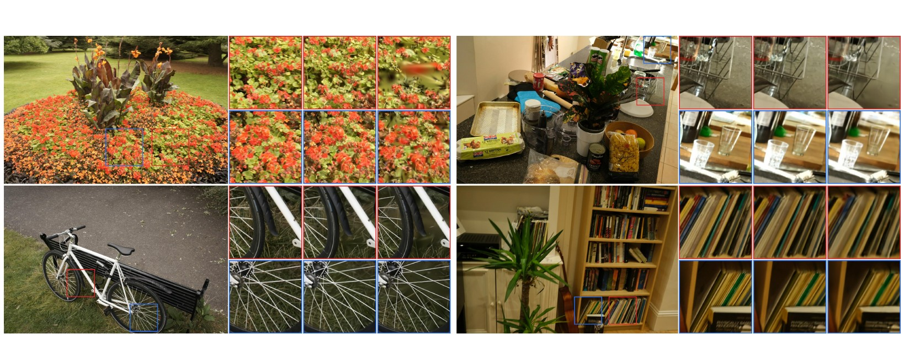

3D Gaussian splats enable real-time rendering but require substantial storage. Existing compression methods either encode the primitives of a given splat or optimize a compact representation independently for each scene. Yet a Gaussian splat is only one realization of a scene: different arrangements of primitives can produce nearly identical rendered views. We exploit this freedom on the decoding side with SplatTok, a learned scene-resynthesis codec. Trained across thousands of real-world scenes, a transformer encodes an existing splat into compact, spatially anchored latent tokens, and a shared decoder synthesizes a new set of standard Gaussian primitives without preserving correspondence to the input. The representation is learned through rendering supervision rather than primitive reconstruction. At compression time, a quantization-aware latent search refines only the scene code, keeping the networks frozen, and closes most of the encoder’s remaining error. On standard benchmarks, using only renders of the input splat for the latent search, without the original training images, SplatTok matches the PSNR of the feed-forward codec FCGS with 4 to 6.5 times smaller files, compressing input splats about 75 to 110 times. With the training images, it exceeds the PSNR of the per-scene method HAC++ with 13 to 41% smaller files. A single model trained on DL3DV generalizes to unseen scenes with millions of Gaussians and supports multiple target rates without retraining.
3D Gaussian splats render photorealistic scenes in real time, but a single scene often takes hundreds of megabytes to over a gigabyte — too large to stream to a headset or phone, or to store by the thousands. The most compact existing methods rebuild every scene from scratch using its original training photos, which takes tens of minutes per scene and often yields a format that needs its own renderer. Fast feed-forward codecs keep the standard format and need no photos, but code each Gaussian individually and only shrink files 10–30×. Yet a splat is just one of many arrangements of Gaussians that render the same scene. SplatTok learns how scenes are structured from thousands of real-world captures, compresses a whole splat into a compact set of tokens, and regenerates a fresh, standard splat from them — reaching compression ratios comparable to per-scene methods even without the original images.


Renders along a camera path from the input splat and from SplatTok reconstructions with 8-bit and 6-bit tokens, with compressed sizes. Videos in each row play in sync.
Input splat · 788 MB
SplatTok (8-bit) · 10.89 MB
SplatTok (6-bit) · 7.46 MB
Input splat · 788 MB
SplatTok (8-bit) · 10.89 MB
SplatTok (6-bit) · 7.46 MB
Input splat · 394 MB
SplatTok (8-bit) · 5.65 MB
SplatTok (6-bit) · 3.94 MB
Input splat · 225 MB
SplatTok (8-bit) · 3.20 MB
SplatTok (6-bit) · 2.04 MB
Input splat · 225 MB
SplatTok (8-bit) · 3.20 MB
SplatTok (6-bit) · 2.04 MB